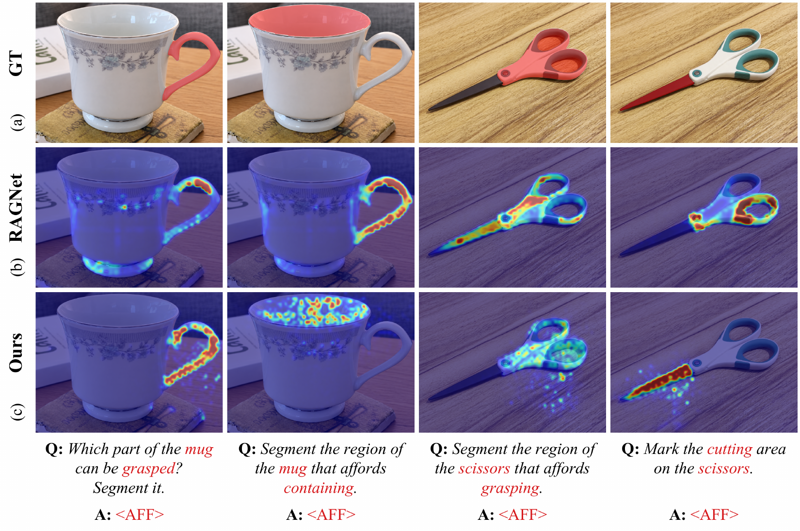
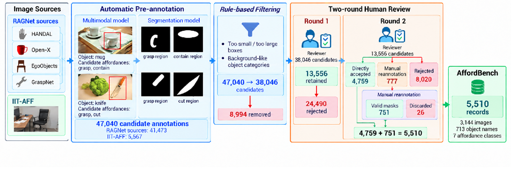

AffiMoE
Language-Grounded
Affordance Reasoning
让动作意图精确对应到
物体的局部功能区域
Fine-Grained Text-Visual Alignment via Token-Wise Expert Routing for Language-Grounded Affordance Reasoning

MOTIVATION
理解任务，还需要找准操作部位
多模态模型能够理解全局任务语义，但动作意图与局部功能区域之间的对应仍不充分。同一物体的不同操作需要不同的交互位置：抓取杯子与盛水、握住剪刀与裁剪，不能依靠相同的物体级响应来区分。
CONTRIBUTION
动作条件化的细粒度功能定位
- 细粒度图文对齐将动作语义与密集视觉证据显式关联，增强对局部功能结构的区分。
- 逐 token 全局／局部专家路由选择性结合全局语义与局部对齐证据，提升动作相关区域的定位精度。
- AffordBench 数据构建通过自动预标注与人工复核，提供细粒度功能区域的高质量监督。
EVALUATION
功能区域定位结果
cIoU / gIoU · % · 越高越好
| 评测设置 | cIoU ↑ | gIoU ↑ | 结果口径 |
|---|---|---|---|
| UMD | 72.06 | 63.33 | 原始评测标注 |
| UMD-relabeled | 83.04 | 79.76 | 相同 UMD 图像，人工修订标注 |
| HANDAL | 71.32 | 69.33 | 独立实验设置，与 AffordanceVLM 使用相同训练数据 |
论文 Table 1、Table 6 报告结果。UMD 使用 AffordBench 微调，原始与修订标注对应同一图像集。HANDAL 为单独实验，与 AffordanceVLM 使用相同训练数据；不同设置的成绩不代表同一 checkpoint。
AFFORDBENCH
经人工核验的细粒度功能区域数据
- 功能区域标注记录
- 5,510
- 独立图像
- 3,144
- Affordance 类别
- 7
整合 HANDAL、Open-X、EgoObjects、GraspNet 与 IIT-AFF 的图像资源。经自动预标注、规则筛选与两轮人工复核，从 47,040 条候选标注中保留 5,510 条记录，其中 751 条来自人工重新标注。

AffordBench 在上述主实验中提供训练监督。记录按“物体实例—affordance”标注计数，同一图像可以包含多条记录；5,510 不代表独立图像数量。